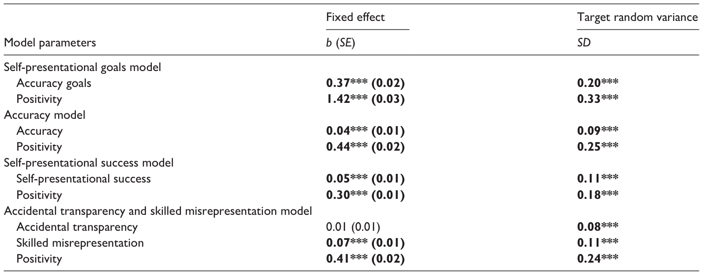
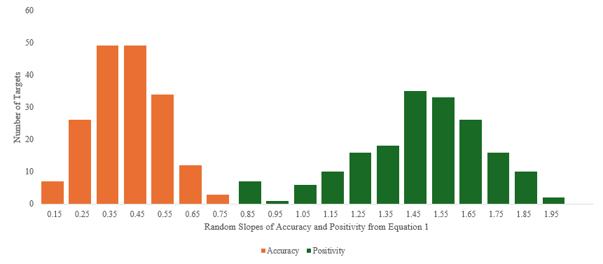
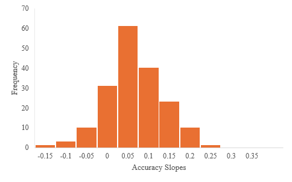
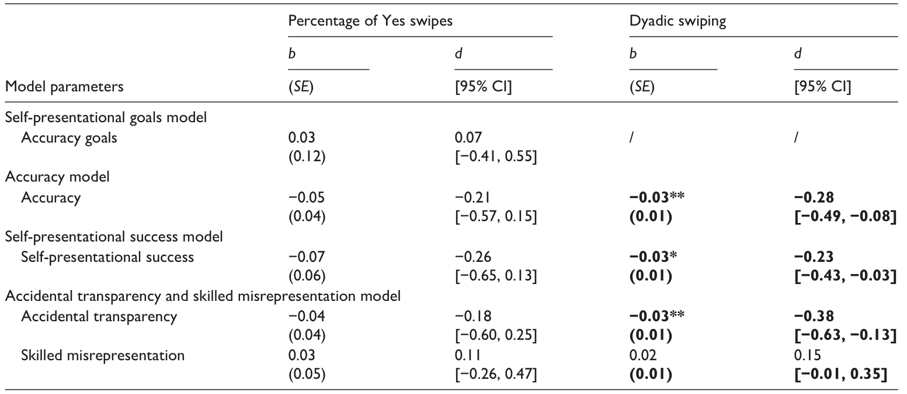
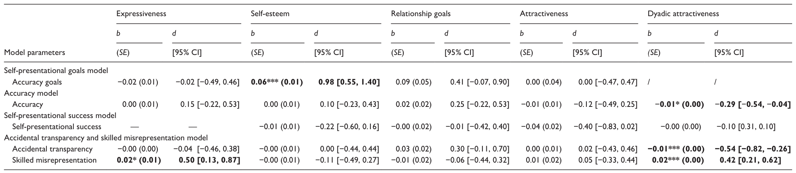
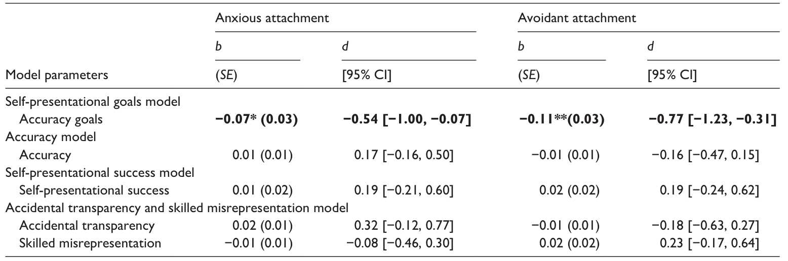

1 引言
- 人们多大程度上想在约会资料里准确或不同地展示自己
- 人们多大程度上希望被准确地看到和/或以符合他们希望的方式被看到
- 这些策略和过程与约会成功的关系
1.1 人们希望自己在线上约会中的形象是什么样的？
- 形象管理在约会中很重要，尤其是在线上约会中
- 准确展示自己的动机
- 遇到合适的人
- 与某人见面的期待，避免货不对板让对方失望
- 不准确展示自己的动机
- 吸引最佳潜在约会对象
- 满足价值和自尊需求
- 事实上人们会选择性描述来提高吸引力
- 尽管被试会说自己准确地展示了自己，但我们不知道是不是真的
1.2 人们是否被准确看到，或者和他们的自我呈现目标一致？
- 人们通过细微背景被看到
- 自我展示成功（self-presentational success）：通过展示自我，以自己希望的方式被看到
- 技巧性错误展示（skilled misrepresentation）：把自己描绘得更成功
- 意外透明（accidental transparency）：想隐瞒但部分真是情况被察觉
- 本研究揭示：
- 人们的人格在线上约会中如何表现
- 人们是否能在线上约会中实现自我表现的目标——不管这些目标是否被准确地看到
- 线上约会中观察到的部分准确性是有意的还是偶然的。
1.3 准确性或自我展示成功是值得的吗？
- 约会者喜欢准确，但事实上主观的对他人理解才是促进关系发展的原因
- 早期浪漫关系中，被积极看待比被了解更好
- 快速约会中，被准确看到和低浪漫兴趣（romantic interest）相关
- 约会者似乎更喜欢自我展示成功者或技巧性错误展示者
- 本研究揭示：
- 准确性和自我展示成功是否能预测浪漫兴趣
- 准确性是有意的还是偶然的（解释准确性的矛盾结果）
- 偶然的准确性通常和不良结果相关（隐瞒被发现）
1.4 准确性和自我展示的调节效应
- 有些人被准确看到是有意的，有些人是想隐瞒但被发现
- 探究一下变量的调节作用：
- 表现力（expressiveness）
- 自尊（self-esteem）
- 关系目标（relationship goals）
- 吸引力（attractiveness）
- 依恋（attachment）
- 高自尊、多信息展示、寻找长期关系和吸引力高的人会准确展示并希望被准确看到
- 焦虑型依恋会技巧性错误展示，但会失败（隐藏焦虑动机）
- 回避型依恋会技巧性错误展示，但会成功（回避亲密动机）
1.5 本研究
- 探究自我展示目标、多大程度上被准确看到、多大程度上达到自我展示目标
- 探究这些情况是否会被选中
- 探究调节效应
2 方法
2.1 被试
- 目标：在线约会资料
- 180人，18+
- 上传真实约会资料
- 在线约会资料评委
- 196人，18-30
- 单身且在寻求一段关系
2.2 测量
- 目标
- 自我认知和期望印象：大五人格，Ten Item Personality Inventory，包括对自己的评价和自己期望的状态
- 表现力：约会资料图片数量和文字数量，z分数后求和
- 自尊：Single Item Self Esteem Scale
- 关系目标：What kind of relationship are you seeking?，长期和短期
- 依恋：12-item Experience in Close Relationships Scale
- 线上约会资料：真实平台资料，去除个人信息后，至少包含一张图片
- 评委
- 目标人格：Ten Item Personality Inventory，分3次，一次评10个，共评价30个目标
- 吸引力：I think this person is attractive/good-looking
- 结果：通过滑动来决定是否接受目标，右滑是感兴趣
2.3 分析
- 使用Social Accuracy Model（SAM）
2.3.1 人们希望在线上约会中如何被看到？
- 自评大五人格作为自变量，理想大五人格作为因变量，套入SAM进行检验
2.3.2 人们是否被准确看到，或者和他们的自我呈现目标一致？
- 准确性：自评大五人格作为自变量（以自评大五人格均值为中心），评委评分大五人格作为因变量，套入SAM进行检验
- 自我展示成功：理想大五人格作为自变量（以理想大五人格均值为中心），评委评分大五人格作为因变量，套入SAM进行检验
- 技巧性错误展示和意外透明：自评大五人格和理想大五人格一起作为自变量（都以自评大五人格均值为中心），评委评分大五人格作为因变量，套入SAM进行检验
- 自评大五人格的系数是意外透明
- 理想大五人格的系数是技巧性错误展示
- 结果和调节：所有变量都是处理后作为调节变量加入模型
- 滑动：确认比例（目标水平）和哑变量（评委水平）两种
- 表现力：z分数
- 关系目标：哑变量
- 自尊、依恋焦虑、依恋回避：宏平均
- 吸引力：原始吸引力评分；通过在评委、目标两个层面的随机截距，获得评委和目标部分得分的偏差值，减去偏差值和整体均值得到的评分（二元吸引力）
3 结果
3.1 人们希望在线上约会中如何被看到？


3.2 人们是否被准确看到，或者和他们的自我呈现目标一致？

3.3 准确性或自我展示成功是值得的吗？

- 比例
- 更希望别人按照真实人格认识自己的目标者，右滑比例无变化
- 总体上更容易被评委准确判断的目标，右滑比例无变化
- 更能成功传达期望印象的目标，右滑比例无变化
- 两种显露下，右滑比例无变化
- 哑变量
- 评委对自己感兴趣的人（右滑），反而判断得稍微不那么准确
- 评委越按照目标希望的方式认识该目标，该评委越不容易右滑
- 评委识别出了目标并不打算展示的真实人格，更不容易右滑
3.4 准确性和自我展示的调节因素

- 表现力
- 表现力强的个体更会技巧性错误展示
- 自尊
- 自尊高的个体更愿意展示真实的自己
- 关系目标
- 均无准确性差异
- 吸引力
- 均无准确性差异
- 二元吸引力
- 二元吸引力高的个体不易被准确识别
- 二元吸引力高的个体不易被发现意外透明
- 二元吸引力高的个体更容易技巧性错误展示

- 焦虑型依恋和回避型依恋
- 均不愿意展示真实自我
4 讨论
- 在线约会者既希望别人准确地认识自己，也希望呈现不同于一般自我认知的形象
- 在线约会者在准确展示和不同展示上都取得了一定成功
- 当人们能够选择和组织线索时，他们既会真实展示自己，也会投射经过塑造的不同形象
- 准确性主要是有意形成的，而不是目标者无法控制的真实人格泄露
- 被准确看到没有带来更多浪漫兴趣
4.1 准确性和意外透明
- 在线约会资料能够在一定程度上反映目标者的真实人格
- 目标者在希望被准确看到的程度上存在差异
- 希望被准确看到的人通常也更容易被准确看到
- 准确性主要来自目标者主动提供有效线索，而不是评委特别善于判断
- 目标者能够通过选择照片、文字等资料控制自己的人格透明度
- 意外透明整体较弱，说明准确性通常不是因为目标者想隐藏却没有隐藏成功
- 在目标者难以控制线索的环境中，例如快速约会，可能出现更多意外透明
4.2 准确性是值得的吗？
- 目标层面
- 总体上更容易被准确判断的目标者，并没有收到更多或更少右滑
- 没有证据表明容易被准确判断的人总体上更受欢迎
- 评委—目标二元关系层面
- 某位评委对某个目标判断得越准确，该评委越不容易右滑该目标
- 浪漫兴趣与准确性的负向关系主要发生在二元关系层面，而不是目标者总体层面
- 可能解释
- 评委受到某个目标者吸引时，可能减少对人格线索的注意
- 光环偏差可能让评委对自己认为有吸引力的人判断得不够准确
- 但事后分析发现，吸引力不能解释浪漫兴趣与准确性之间的关系
- 约会者声称喜欢真实的人，但其实际选择可能不符合这种偏好
- 解释边界
- 这些结果只能说明右滑与准确性相关
- 不能证明准确性导致右滑减少
- 也可能是浪漫兴趣改变了评委处理人格线索的方式
4.3 准确性目标和被准确看到的调节因素
- 自尊
- 自尊高的人更希望被准确看到
- 但自尊高的人实际上没有被判断得更准确
- 依恋
- 焦虑型依恋者更不希望被准确看到
- 回避型依恋者更不希望被准确看到
- 但依恋焦虑和依恋回避均未预测实际准确性
- 其他变量
- 关系目标、表现力和总体吸引力等没有稳定预测实际准确性
- 总体结论
- 准确性动机没有稳定转化为实际准确性
- 个体差异能够解释想不想被准确看到，但不能解释是否真的被准确看到
- 可能原因
- 目标者之间的准确性差异较小
- 意外透明的目标者间差异也较小
- 可供调节变量解释的变异有限
- 在线约会资料提供的人格线索有限
- 评委不预期与目标者见面，因此准确判断的动机可能不足
4.4 自我展示成功和技巧性错误展示
- 在线约会者能够成功传达自己希望形成的印象
- 即使期望印象不同于真实自我认知，他们也能够取得一定程度的自我展示成功
- 这说明人们能够通过选择照片、文字和其他资料线索塑造期望形象
- 评委可能认为自己正在从约会资料中筛选有效信息，但实际上可能遗漏重要人格线索
4.5 自我展示成功是值得的吗？
- 目标者层面
- 总体上更能成功传达期望印象的目标者，没有收到更多或更少右滑
- 技巧性错误展示没有带来更多或更少的总体右滑
- 评委—目标二元关系层面
- 某位评委越按照目标者希望的方式认识目标者，该评委越不容易右滑
- 自我展示成功与右滑之间存在较小的负向关系
- 可能解释
- 自我展示成功的一部分是被准确看到
- 其负向结果可能主要来自准确性与浪漫兴趣之间的负向关系
- 技巧性错误展示
- 技巧性错误展示与右滑没有稳定关系
- 总体结论
- 评委没有表现出对自我展示技巧较高者的特别欣赏
- 目标者希望被准确看到的愿望反而可能产生负面结果
4.6 自我展示的调节因素
- 依恋
- 焦虑型和回避型依恋者更希望展示不同于真实自我的形象
- 依恋没有预测技巧性错误展示是否成功
- 有错误展示动机不等于有能力成功进行错误展示
- 表现力
- 在资料中提供更多照片和文字的人更擅长技巧性错误展示
- 提供更多信息没有使目标者被判断得更加准确
- 更多信息可能为目标者提供更多组织和操纵线索的机会
- 二元吸引力
- 某位评委越觉得某个目标者特别有吸引力，该目标者越能向这位评委传达期望印象
- 二元吸引力越高，意外透明越少
- 二元吸引力越高，技巧性错误展示越成功
- 吸引力可能增加评委的注意，但这些注意可能受到目标者所组织线索的引导
4.7 未来研究方向
- 考察哪些照片、文字和资料线索能够改变具体人格印象
- 考察黑暗三联征等自我展示动机
- 考察在线约会经验等自我展示能力
- 考察不同人格特质的错误展示难度
4.8 局限
- 评委不预期与目标者见面
- 可能降低评委准确判断目标者人格的动机
- 现实约会中的准确性水平和目标者间差异可能更高
- 线上与线下可能不同
- 线上善于组织线索的人，线下不一定能够形成相同印象
- 表现力强的人可能在线上成功自我展示，但在线下更容易出现意外透明
- 自我展示能力可能具有情境特异性
- 研究主要关注目标者
- 评委的社会经历和关系经历可能影响其处理人格线索的方式
- 善于判断人格的评委可能要到聊天或线下互动阶段才会显现
- 还可能存在特别善于识别错误展示的评委
- 没有充分考察具体人格特质
- 不同人格特质可能具有不同的可识别程度
- 幽默、自信等大五人格以外的特质可能在约会情境中更加重要
- 未来可以采用逐项特质分析
- 准确性标准存在限制
- 研究以目标者的一般自我认知作为准确性标准
- 目标者在约会情境中的自我认知可能不同于一般自我认知
- 未来应测量约会情境特异性的自我认知
- 可推广性的限制
- 被试年龄均为18—30岁
- 被试来自加拿大或美国
- 很多被试是大学生
- 结果主要适用于参与在线约会的北美年轻成年人
- 年龄较大的成年人可能具有不同的约会自我展示目标
- 未来研究应扩展到年龄更大以及其他文化背景的人群
5 结论
- 在线约会者同时具有两种自我展示目标
- 准确展示真实自我
- 展示不同于真实自我的形象
- 在线约会者在两种目标上都取得了一定成功
- 准确性主要是目标者有意透明的结果
- 透明和准确没有带来更多浪漫兴趣
- 在特定评委—目标关系中，透明和准确甚至与更少右滑相关
- 技巧性错误展示没有表现出稳定的浪漫收益或代价
- 本研究主要识别出了一些阻碍准确展示或错误展示成功的因素，但尚未明确发现促进这些策略的因素
- 研究人格判断准确性时，需要考虑目标者是否希望被准确看到
- 后续研究需要进一步区分
- 有意的准确展示
- 意外透明
- 技巧性错误展示
- 目标者总体效应
- 评委—目标二元效应
参考文献
Jiwa, S., Elsaadawy, N., & Carlson, E. N. (in press). Who did i swipe on? Accuracy and self-presentation in online dating. Personality and Social Psychology Bulletin. https://doi.org/10.1177/01461672251386488